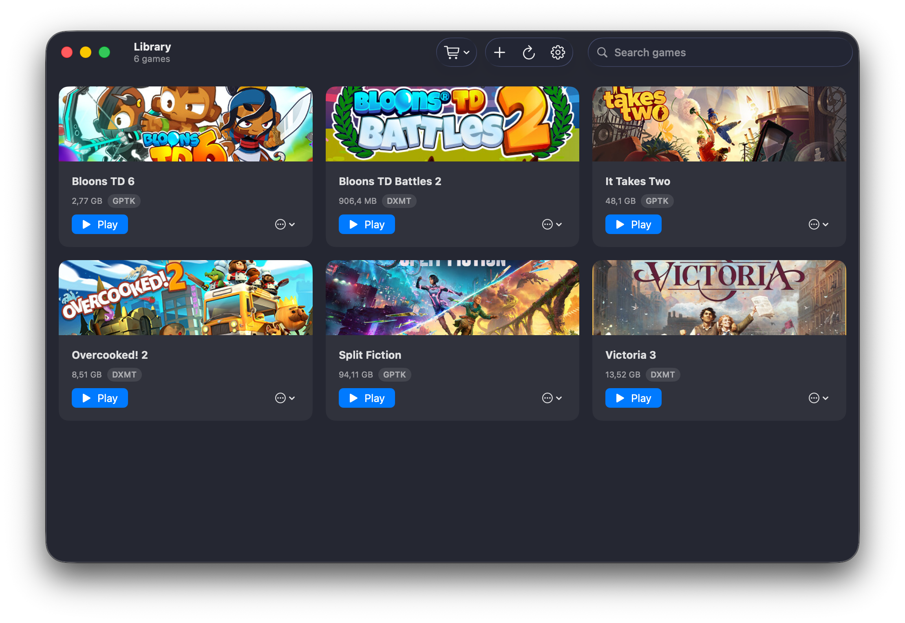

Your real Steam library
Silo discovers the games installed in its Steam bottle and launches each one on its backend — co-resident with a logged-in Steam client, so Steamworks and DRM titles run. No emulator, no fakery.
Open source · Windows Steam games on Apple Silicon
A native macOS launcher for your Windows Steam library — run games through Wine on Metal, with Silo choosing GPTK/D3DMetal or DXMT per game, co-resident with a real Steam client so Steamworks and DRM just work.

Built for the Mac
Silo discovers the games installed in its Steam bottle and launches each one on its backend — co-resident with a logged-in Steam client, so Steamworks and DRM titles run. No emulator, no fakery.
Silo picks per game: GPTK / D3DMetal (Apple's) maps DirectX 10/11/12 to Metal; DXMT translates DirectX 10/11 directly — for 32-bit titles and when GPTK can't run a game. DirectX 9/8 and OpenGL use Wine's own renderer. Override per game anytime. No DXVK, no Homebrew.
Add any Windows .exe — an installer or a portable build —
and Silo provisions a dedicated, isolated Wine bottle for it, with its
own backend and launch options. Create a Desktop shortcut for any game —
Steam or not — to launch it through Silo in one double-click.
Relocate every bottle to an external drive anytime.
Silo fetches its own Wine runtime (built in its own CI from open-source LGPL Wine) and updates itself from GitHub Releases. No package manager, no external dependencies.
How a launch works
Every Steam game launches co-resident with one logged-in client
in a single shared bottle — so Steamworks and DRM work — with the graphics
backend Silo picked (GPTK or DXMT) and its environment injected at launch.
Non-Steam .exes each get their own isolated bottle instead.
Parse the shared bottle's appmanifest_*.acf for installed games, skipping Steam's redistributables.
Pick GPTK or DXMT for the game (32-bit → DXMT, else GPTK), or honor your per-game override; a silent GPTK failure switches an Automatic game to DXMT next time.
Overlay the chosen backend (GPTK/D3DMetal or DXMT) into the runtime's own lib/wine, forced builtin so nothing can shadow it.
Spawn the game detached — co-resident with its Steam client for Steam titles, or in its own bottle for non-Steam .exes.
What runs, and how
Silo chooses automatically: GPTK / D3DMetal by default, DXMT for 32-bit titles and as the fallback for DirectX 10/11 games GPTK's device creation can't run. Wine's own stack covers DirectX 9 and OpenGL. Override the backend per game whenever you want.
Get Silo
Silo runs on macOS 15 or newer on Apple Silicon, outside the App Sandbox so it can drive Wine. It is not yet notarized, so a manual install needs the quarantine step shown in the README.